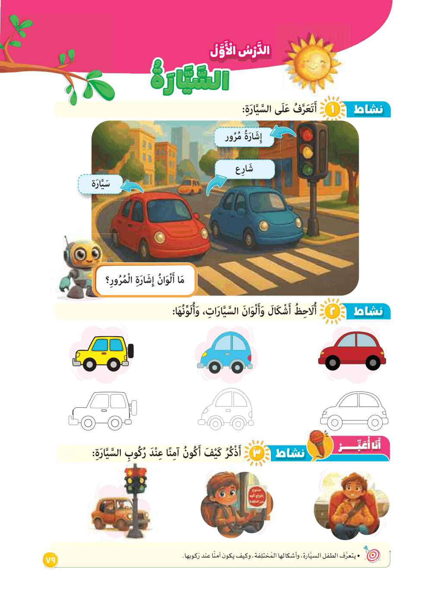
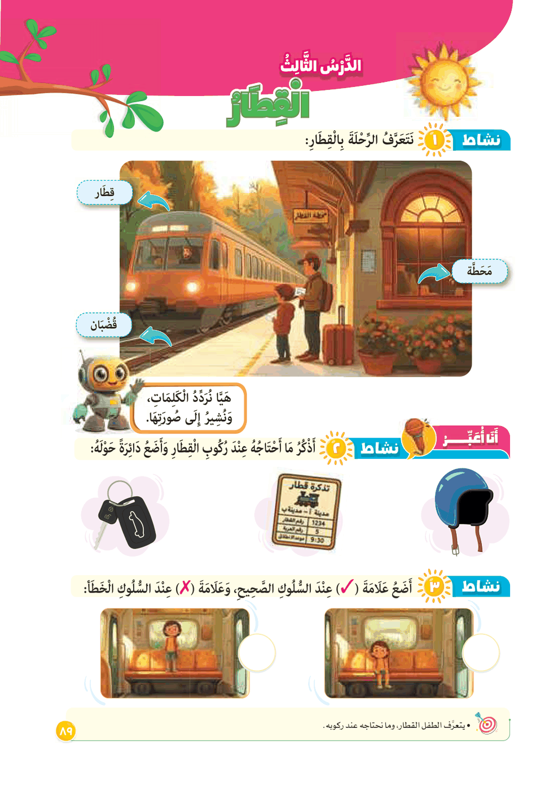
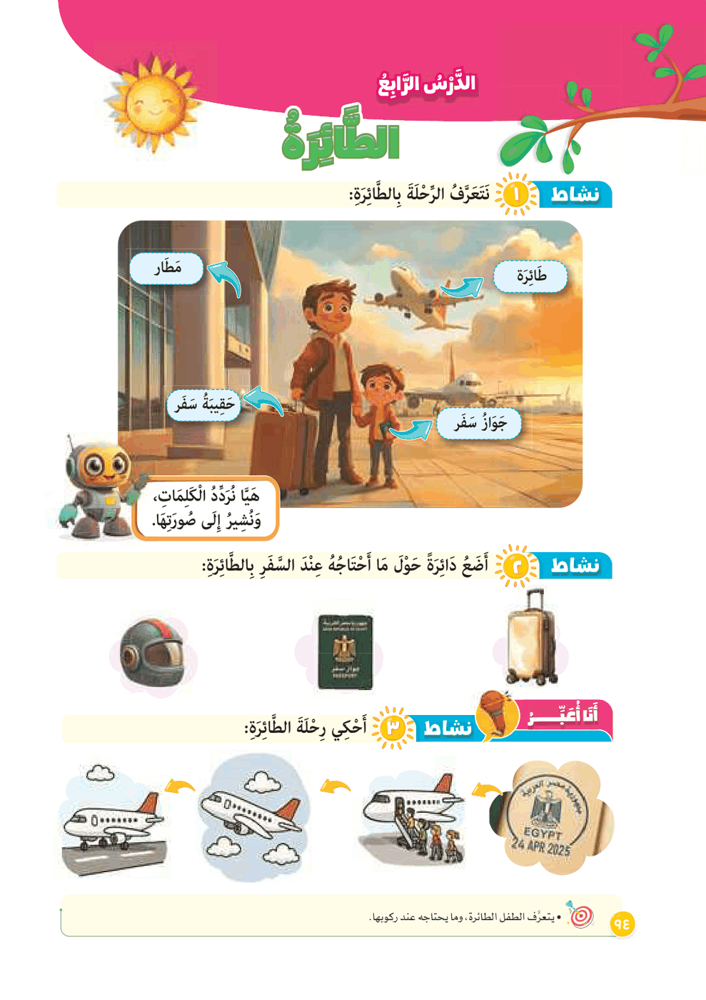
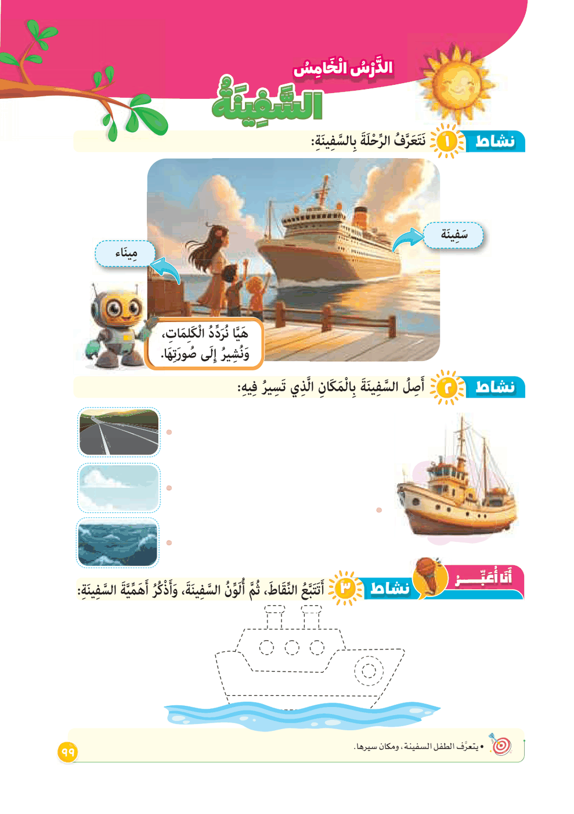

🚆 كتاب الوزارة المعتمد • المستوى الثاني KG2 • الوحدة الثالثة
الوحدة الثالثة: وسائل المواصلات (السيارة، القطار، الطائرة، والسفينة)
منهج اللغة العربية تواصل 2.0 • كتاب الوزارة الرسمي • قصص الاستماع، قواعد المرور والسلامة، والحروف (ف، ك، ق، ي، ع) مع حروف الرفس والنشيد
🌟كتاب الوزارة: غلاف الوحدة الثالثة (وسائل المواصلات)

📸غلاف الوحدة الثالثة رسمياً من كتاب الوزارة: وسائل المواصلات
تأخذ هذه الوحدة الطفل في رحلة مشوقة لاستكشاف وسائل النقل والمواصلات في البر والجو والبحر، من السيارة والدراجة والقطار، إلى الطائرة والسفينة، مع تعلم إشارات المرور وقواعد السلامة على الطرق، والحروف الختامية للترم الأول.
📖قصة الاستماع: رحلة سلمى إلى الروضة
🚌قصة سلمى وحافلة الروضة الصفراء
استيقظت «سلمى» بنشاط وارتدت زي الروضة، ثم وقفت تنتظر حافلة المدرسة مع والدتها. عندما وصلت الحافلة صعدت سلمى بنظام وألقت التحية على السائق «عم شريف» وجلست بهدوء وربطت حزام الأمان.
أثناء الطريق، نظرت سلمى من النافذة ورأت إشارة المرور تضيء باللون الأحمر فتوقفت السيارات جميعاً، ثم أضاءت بالأصفر فاستعد السائقون، ولما أضاءت بالأخضر انطلقت الحافلة بسلام!
مرت الحافلة بجوار شريط السكة الحديد وشاهدت سلمى القطار السريع يطلق صفارته: توت توت! وفي السماء لمحت طائرة بيضاء تحلق فوق السحاب. قالت سلمى بفرح: «ما أجمل وسائل المواصلات التي تقرب المسافات بين الناس!».
أثناء الطريق، نظرت سلمى من النافذة ورأت إشارة المرور تضيء باللون الأحمر فتوقفت السيارات جميعاً، ثم أضاءت بالأصفر فاستعد السائقون، ولما أضاءت بالأخضر انطلقت الحافلة بسلام!
مرت الحافلة بجوار شريط السكة الحديد وشاهدت سلمى القطار السريع يطلق صفارته: توت توت! وفي السماء لمحت طائرة بيضاء تحلق فوق السحاب. قالت سلمى بفرح: «ما أجمل وسائل المواصلات التي تقرب المسافات بين الناس!».
🚗دروس وسائل المواصلات المصورة من كتاب الوزارة

📸كتاب الوزارة (ص ٨٠): درس السيارة وإشارات المرور وحرف الفاء

📸كتاب الوزارة (ص ٩٠): درس القطار والسكة الحديد وحرف القاف

📸كتاب الوزارة (ص ٩٥): درس الطائرة والمطار والتحليق وحرف الياء

📸كتاب الوزارة (ص ١٠٠): درس السفينة والميناء والبحر وحرف العين
إشارات المرور
أحمر (قف) 🛑 • أصفر (استعد) ⚠️ • أخضر (انطلق) 🟢
الدراجة والخوذة
أرتدي خوذة الأمان وأسير في الممر المخصص للدراجات
القطار السريع
يسير على قضبان السكة الحديد وينقل الركاب بين المدن
الطائرة والمطار
تطير في السماء وتنقل المسافرين عبر الدول والبحار
السفينة والبحر
تبحر في مياه البحر وترسو في الموانئ الكبيرة
🔤حروف الوحدة الثالثة بالحركات الأربع (ف، ك، ق، ي، ع)
ف
حرف الفاء
فَ: فَرَاشَة
فِ: فِيل
فُ: فُسْتَان
فْ: طِفْل
ك
حرف الكاف
كَ: كَلْب
كِ: كِتَاب
كُ: كُرَة
كْ: سَمَك
ق
حرف القاف
قَ: قَلَم
قِ: قِطَار
قُ: قُبَّعَة
قْ: صَقْر
ي
حرف الياء
يَ: يَد
يُ: يُوسُفِي
يْ: بَيْت
ع
حرف العين
عَ: عَلَم
عِ: عِنَب
عُ: عُصْفُور
عْ: شَمْع
🌟قاعدة هامة لرياض الأطفال: حروف الرفس والقطع (الحروف الشقية)
ما هي حروف الرفس الستة؟
هي ستة حروف تمسك بالحرف الذي قبلها فقط، وترفض أن تمسك بأي حرف يأتي بعدها وتتركه منفصلاً (ترفسه!):
أ • د • ذ • ر • ز • و
أمثلة من منهجنا:
• كلمة «وَرَق» (الواو والراء لا يمسكان ما بعدهما).
• كلمة «دُرُوس» (الدال والراء والواو حروف رفس).
• كلمة «أَسَد» (الألف لا تمسك بالسين).
🎵أغنية الوحدة الثالثة من كتاب الوزارة: رحلة المساء
🎶نشيد: رحلة المساء ووسائل المواصلات
طيري يا طيارة فوق السحاب .. واجري يا حافلة عبر الشعاب
قطارنا السريع يجري ليل نهار .. يحملنا لبلدنا داراً فدار
سفينتي تبحر في أمان .. ترسو على شاطئ الرمان
نحمدك اللهم يا رحمن .. سخرت لنا سبل الأمان!
قطارنا السريع يجري ليل نهار .. يحملنا لبلدنا داراً فدار
سفينتي تبحر في أمان .. ترسو على شاطئ الرمان
نحمدك اللهم يا رحمن .. سخرت لنا سبل الأمان!
📝اختبار الوحدة التفاعلي (وسائل المواصلات) مع نموذج الإجابة
1. عندما تضيء إشارة المرور باللون الأحمر، يجب على السيارات أن:
الإجابة الصحيحة: أ) تتوقف تماماً (قف) - اللون الأحمر يعني قف، والأصفر استعد، والأخضر انطلق.
2. ما الحرف الذي تبدأ به كلمة «قِطَار» وكلمة «قَلَم»؟
الإجابة الصحيحة: أ) حرف القاف (ق) وهو حرف مفخم قوي.
3. وسيلة مواصلات تطير في السماء ولها جناحان وتنقل الركاب بين الدول:
الإجابة الصحيحة: أ) الطائرة ✈️ تهبط وتقلع من المطار.
4. أي من الحروف التالية ينتمي لمجموعة حروف الرفس والقطع؟
الإجابة الصحيحة: أ) حرف الدال (د) من حروف الرفس الستة (أ، د، ذ، ر، ز، و).
5. كلمة «عَلَم» مصر الحبيبة 🇪🇬 تبدأ بحرف:
الإجابة الصحيحة: أ) حرف العين المفتوح (عَ) مثل: عَلَم، عَسَل.